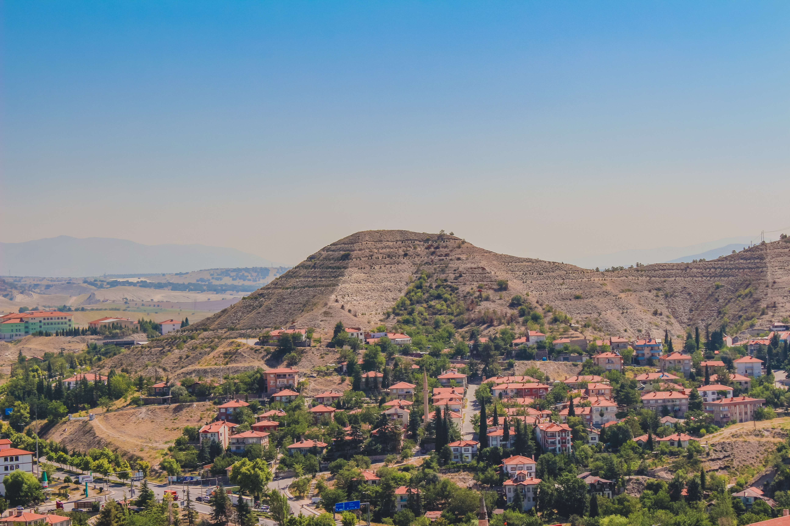

İklim ve Bitki örtüsü
Ankara İklimi Nedir?
Her şehir konum itibariyle farklı bir iklime sahiptir. İklimlerin değişkenliği pek çok kişinin ilgisini çekebiliyor. Her bir şehrin yaşadığı iklimi öğrenmek adına bazı araştırmalar yapılabiliyor. Ankara ilinin sahip olduğu iklim türleri de oldukça merak ediliyor. İklimlerin türünü ve özelliklerini öğrenmek adına kişilerin kendi kaynaklarında yaptığı araştırmalar bulunuyor. Ankara şehrinde genellikle Karadeniz bölgesinin iklimi görülüyor. Kış ayları oldukça yağışlı, yaz ayları ise kurak geçiyor.
Bitki Örtüsü ve Özellikleri Nelerdir?
Her bölgenin kendine ait bir bitki örtüsü bulunuyor. Şehirlerin konum itibariyle yer aldığı bölgelerde farklı bitki örtüleri görülebiliyor. Başkent olan Ankara şehrinin bitki örtüsü bozkırdır. İlkbahar aylarında çok fazla yeşillik görülür. Ankara'da yer ormanların büyük bir kısmı korulardır. Baltalık ormanlara sahip olan bir bitki örtüsüne sahiptir.
